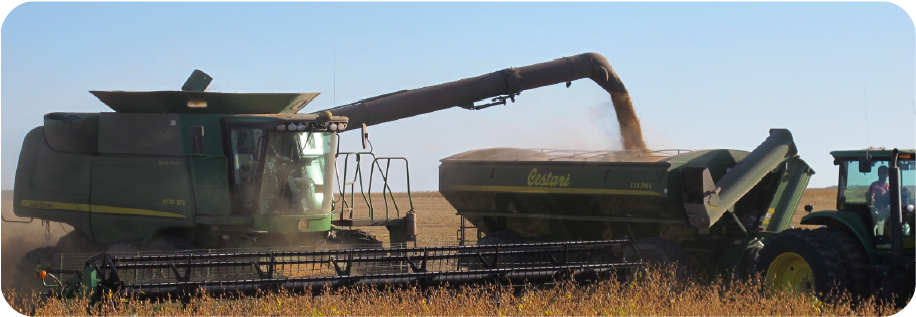
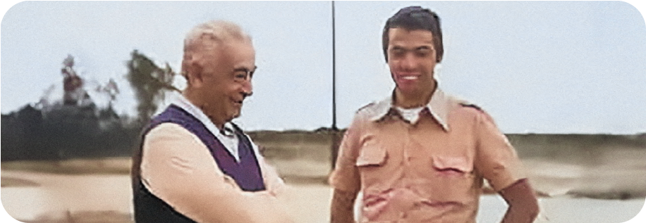
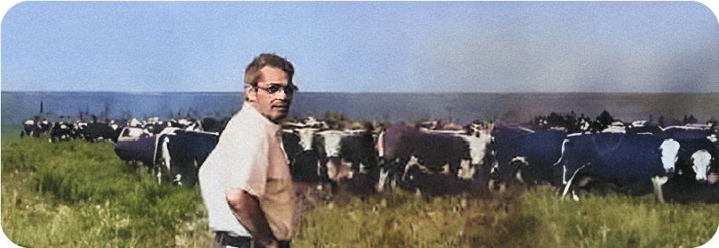
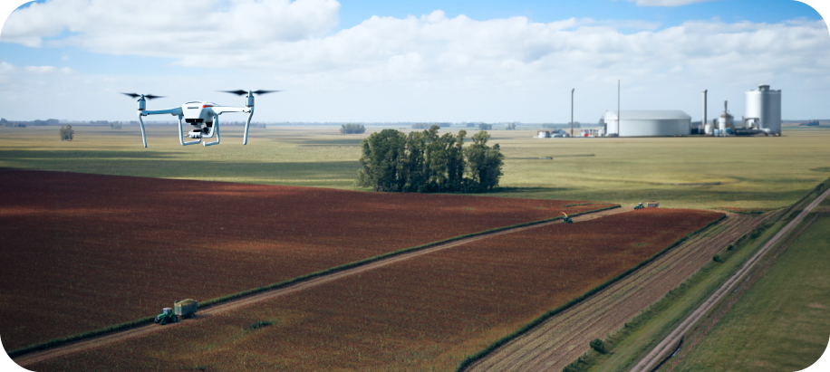

Somos parte de un holding global dirigido por tres generaciones de la misma familia. Nuestro fundador, Don Serafino Ferruzzi, fue un destacado empresario italiano que incursionó exitosamente en diversos sectores, desde la agricultura y comercio de materias primas agrícolas hasta la industria del cemento, logística portuaria, comercio internacional de cereales, transporte marítimo, sector agroindustrial, industria del aceite, sector azucarero, inversiones inmobiliarias, industria del hormigón, y agricultura y ganadería, marcando una trayectoria multifacética y visionaria en la historia empresarial.

Su estrategia de innovación, diferenciación y expansión internacional han sido pilares fundamentales que han guiado el camino del grupo a lo largo de los años.
Hoy en día Fersam Group opera activamente en los sectores de Agroindustria principalmente en Latinoamérica, Real Estate con Europa como principal mercado y Private Equity con una mirada global.
Iniciamos la unidad de negocios Agroindustrial en la segunda mitad del siglo XX con la adquisición y gestión de campos agrícola-ganaderos en Latinoamérica, llegando a totalizar más de 1.000.000 de hectáreas entre Argentina, Brasil, Paraguay y Uruguay.

En la última década el foco de negocios se amplió incorporando a las energías verdes en la estrategia empresarial y se definieron la sustentabilidad y tecnología como vectores de crecimiento. En Fersam Agroindustrial invertimos, desarrollamos y gestionamos empresas y proyectos relacionados a la agroindustria y las nuevas energías en Latinoamérica.

En 2022, llevamos a cabo una revisión estratégica que definió nuestra visión y líneas de desarrollo para los próximos tres años.
El objetivo es consolidarnos como un referente nacional en producción agropecuaria, destacando la excelencia, eficiencia y aplicación de tecnología, integrándonos en la cadena de valor y priorizando la sostenibilidad.
La estrategia incluye la producción de semillas de maíz en colaboración con Bayer, la incorporación de sistemas de riego, y el desarrollo genético de rebaños de élite en la ganadería. Las instalaciones incluyen silos con capacidad para 25,000 toneladas y una planta de producción de alimentos para animales con capacidad de 5 toneladas/hora, la empresa busca alcanzar un volumen de producción anual estimado en 50,000 toneladas.
Las Cabezas es la tierra que, de entre su inmenso patrimonio territorial de 1.000.000 de hectáreas, Don Serafino Ferruzzi más cuidó y amó.
En la década de 1970 la familia Ferruzzi adquirió “Las Cabezas”, a través de su sociedad local Entre Rios S.A. donde rápidamente supo transformar la actividad tradicional de pastizales permanentes en cultivos, dando particular importancia al cultivo de la soja, un producto que en el transcurso de pocos años vería a la Argentina alcanzar el rol de gran exportador mundial.
La propiedad tiene una extensión cercana a las 20.000 hectáreas y está ubicada en Gualeguay, sur de la provincia de Entre Ríos, Argentina. Con alrededor de 16,000 hectáreas destinadas a cultivos y un ganado de 9,000 a 10,000 cabezas, la empresa cultiva granos finos como trigo y arvejas amarillas, así como soja, maíz y sorgo. En el sector ganadero, se mantiene una raza de ganado Hereford llamada "Las Cabezas" y se desarrolla genéticamente un rebaño "élite" en asociación. Siguiendo una estrategia de integración vertical, alrededor del 80% de las operaciones se realizan internamente, respaldadas por un parque de maquinaria propio.
Constituirnos como una empresa agroindustrial referente a nivel regional por su excelencia, eficiencia, integración y aplicación de tecnología.
Ello acompañado por la integración en la cadena de valor, buscando la máxima integración entre los negocios, y la sustentabilidad como eje de desarrollo de los mismos.
 Adaptación al cambio
Adaptación al cambio